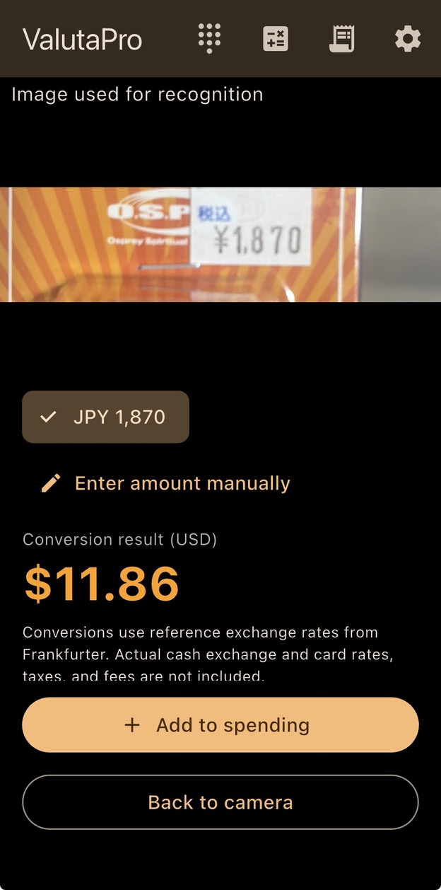
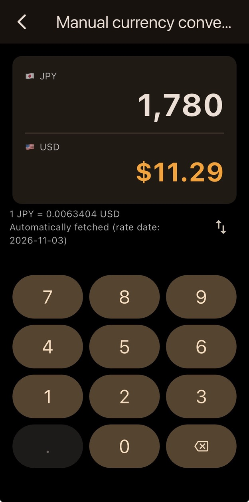
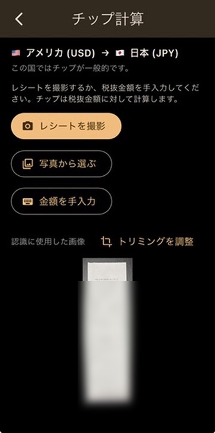

ValutaPro
「これって自分の国のお金でいくら？」——旅先で値札を見るたびに迷わないように。ValutaPro は、値札やレシートをカメラで撮るだけで、現地の金額を自国通貨に換算します。チップの計算やカードの手数料、旅の支出の記録まで、旅先のお金の不安をひとつのアプリで解消します。
"How much is this in my currency?" Point your camera at a price tag or receipt and ValutaPro converts it into your home currency. Tips, card fees and trip spending are covered too, so money abroad is one less thing to worry about.
開発中の画面
Screens in development



※開発中の画面です。公開時には変わることがあります。
Screens are from a development build and may change before launch.
使い方は3ステップ
Three simple steps
- 1
国を選ぶ
Pick your countries
旅行先の国と、自分の国を選びます。アプリは自分の国の言葉で表示されます。
Choose where you're visiting and your home country. The app speaks your home language.
- 2
値札にカメラを向ける
Point at a price
値札やメニューの金額を撮影します。金額が複数見つかったときは、どれを使うか自分で選べます。
Scan a price tag or menu. If several amounts are found, you choose which one — the app never picks silently.
- 3
自国通貨で確認
See it in your currency
換算結果がすぐに表示されます。そのまま旅の支出として記録することもできます。
The converted price appears instantly, and you can add it to your trip spending.
主な機能
Key features
値札スキャン
Price scanning
カメラで値札を撮るだけで金額を読み取り、自国通貨に換算します。
Read prices with your camera and convert them on the spot.
手入力の換算電卓
Manual converter
電卓のように金額を入力して換算。換算の向きもワンタップで入れ替えられます。
Type amounts like a calculator and swap the direction with one tap.
為替レートを自動取得
Automatic rates
最新の参考レートを自動で取得。両替所のレートに合わせたいときは手動でも設定できます。
Reference rates are fetched automatically, with a manual override when you need it.
チップ計算
Tip calculator
レシートから税抜金額を読み取り、チップと合計額を計算。チップの習慣がある国では目安も表示します。
Reads the pre-tax amount from a receipt and works out the tip and total, with suggestions where tipping is customary.
カードの海外手数料
Card fees included
クレジットカードの海外事務手数料を含めた金額で確認できます。
See totals with your card's foreign transaction fee included.
レシート・支出の記録
Receipts & spending
レシートを読み取って支出を記録し、旅行中の合計をまとめて確認できます。
Scan receipts, keep spending records and see totals for your trip.
無料版と Pro
Free and Pro
無料
Free
- 手入力の換算電卓Manual calculator-style converter
- 為替レートの自動取得・手動設定Automatic rates with manual override
- 値札スキャン（24時間に10回まで）Price scanning (10 scans per 24 hours)
Pro 買い切りone-time purchase
- 値札スキャン無制限Unlimited price scanning
- チップの目安とチップ計算Tip suggestions and tip calculator
- カードの海外手数料を含めた合計Card foreign transaction fee in totals
- レシート読み取り・支出記録・旅の合計Receipt scanning, spending records and trip totals
※価格は公開時にお知らせします。月額料金はかかりません。
Pricing will be announced at launch. No subscription.
安心して使えるように
Built with privacy in mind
文字認識は端末の中で
On-device recognition
値札やレシートの写真は、端末の外へ送信されません。
Photos of prices and receipts never leave your phone.
アカウント登録なし
No account
メールアドレスの登録やログインは不要です。
No sign-up, no login.
広告・トラッキングなし
No ads, no tracking
広告の表示や、利用者の追跡は行いません。文字認識の部品（Google ML Kit）が、画像を含まない統計情報を Google に送ることがあります。
No ads and no tracking. The text-recognition component (Google ML Kit) may send Google statistics that never include your photos.
こんな方におすすめ
Who it's for
- 海外旅行・出張が多い方Frequent travelers and business travelers
- 旅先で値段の感覚をすぐにつかみたい方Anyone who wants a quick feel for prices abroad
- チップの習慣がある国で、いくら払えばいいか迷う方Visitors unsure how much to tip
- 旅行中の出費をまとめて把握したい方Travelers who want to keep track of trip spending
よくある質問
FAQ
いつ使えるようになりますか？When will it be available?
現在、実機でテスト中です。まず iPhone 向けに公開予定で、公開時期はこのページと X（旧Twitter）でお知らせします。
We're testing on real devices now. It will launch on iPhone first; we'll announce the date on this page and on X.
どの言語・通貨に対応していますか？Which languages and currencies are supported?
アプリの表示は9言語、金額の読み取りと換算は17通貨に対応しています。アプリは選んだ自分の国の言葉で表示されます。
The app is available in 9 languages and reads and converts prices in 17 currencies. It speaks the language of the home country you choose.
対応言語（9）
日本語、英語、中国語（簡体字）、中国語（繁体字）、韓国語、タイ語、ベトナム語、インドネシア語、マレー語
Languages (9)
Japanese, English, Chinese (Simplified), Chinese (Traditional), Korean, Thai, Vietnamese, Indonesian, Malay
対応通貨（17）
日本円（JPY）、米ドル（USD）、人民元（CNY）、韓国ウォン（KRW）、台湾ドル（TWD）、豪ドル（AUD）、タイバーツ（THB）、ベトナムドン（VND）、インドネシアルピア（IDR）、カナダドル（CAD）、ユーロ（EUR）、英ポンド（GBP）、香港ドル（HKD）、シンガポールドル（SGD）、フィリピンペソ（PHP）、マレーシアリンギット（MYR）、インドルピー（INR）
Currencies (17)
Japanese yen (JPY), US dollar (USD), Chinese yuan (CNY), Korean won (KRW), Taiwan dollar (TWD), Australian dollar (AUD), Thai baht (THB), Vietnamese dong (VND), Indonesian rupiah (IDR), Canadian dollar (CAD), Euro (EUR), British pound (GBP), Hong Kong dollar (HKD), Singapore dollar (SGD), Philippine peso (PHP), Malaysian ringgit (MYR), Indian rupee (INR)
撮影した写真はどこかに送られますか？Are my photos uploaded anywhere?
いいえ。文字の読み取りはすべて端末の中で行い、写真は端末の外へ送信しません。詳しくはプライバシーポリシーをご覧ください。
No. Text recognition runs entirely on your device and photos are never sent anywhere. See our Privacy Policy for details.
為替レートは正確ですか？How accurate are the exchange rates?
公開されている参考レート（Frankfurter）を使っています。実際の両替やカード会社のレート、税金・手数料とは異なる場合があるため、目安としてお使いください。両替所のレートに合わせたいときは、手動でレートを設定できます。
We use public reference rates (Frankfurter). Actual exchange, card rates, taxes and fees may differ, so please treat results as a guide. You can set a rate manually to match an exchange counter.
読み取りが間違うことはありますか？Can scanning get it wrong?
文字の読み取りは完璧ではありません。読み取った画像と金額が画面に表示されるので、必ず見比べて確認してください。読み取れないときは手入力もできます。
Text recognition isn't perfect. The app shows the image next to the amount, so please check them against each other. You can always enter the amount manually.
ネットにつながっていなくても使えますか？Does it work offline?
はい。文字の読み取りは端末の中で行います。為替レートは一度取得しておけば、オフラインでも保存済みのレートで換算できます。
Yes. Text recognition runs on the device, and once rates have been fetched, the saved rates are used offline.
公開のお知らせを受け取る
Get notified at launch
ご質問・ご要望もお気軽にお寄せください。
Questions and feedback are always welcome.
kkcompany.global@gmail.com